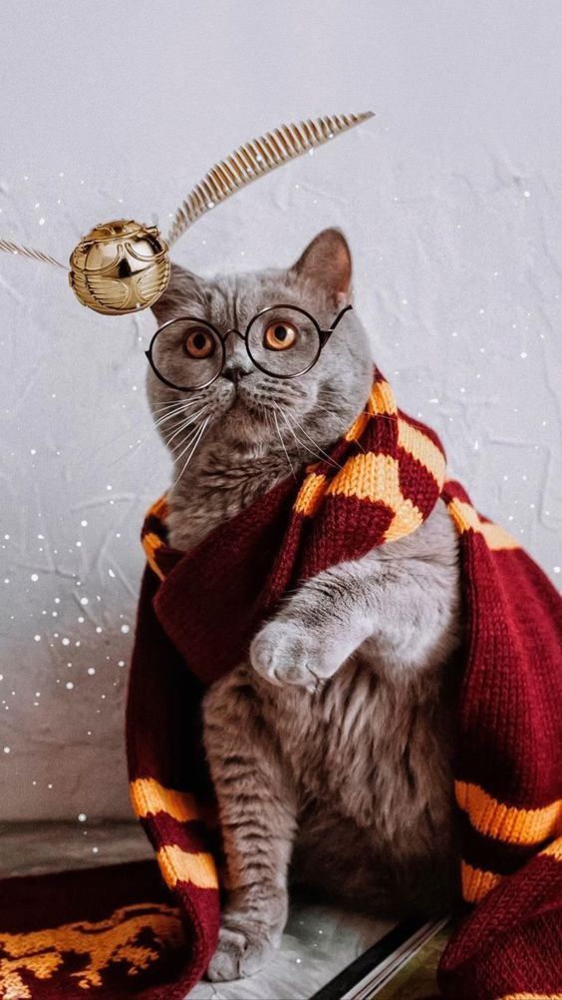

Bem-vindo ao site do nosso Petshop, sinta-se a vontade para explorar o mundo magico de nossos bichinhos.
Quer saber uma curiosidade sobre nós antes de seguir em frente? Pois bem, vamos lá nós somos uma PetShop Temática baseado na série de Livros e Filmes de Harry Potter e o nome do nosso PetShop é um joguinho de palavras onde nos baseamos no feitiço do Patrono que é conjurado com a fala "Expecto Patrono", o feitiço traz a tona a essência de sua magia no mundo fisico na forma de um animal e cada feiticeiro possui o seu próprio Patrono, assim surgiu "Expecto Pet-tronum" que num passe de magica traz a sua vida a essência de um Pet a você. :)
Nós da Expecto Pet-tronum somos uma equipe de 10 pessoas em que acreditam na mágica que os pets podem trazer para nossas vidas e em como as pessoas podem ser a mágica dos bichinhos por isso nos unimos para fazer essa ponte entre Animais fantásticos e Pessoas fantásticas.